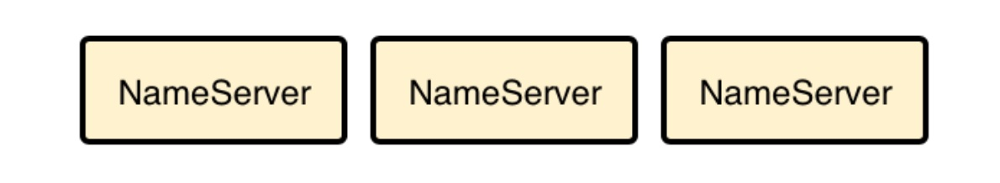
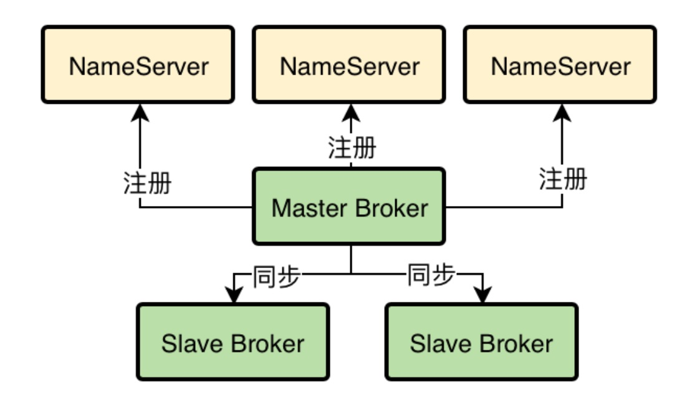
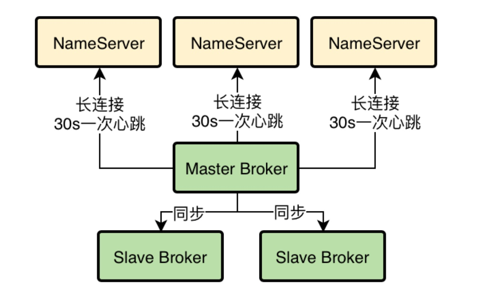
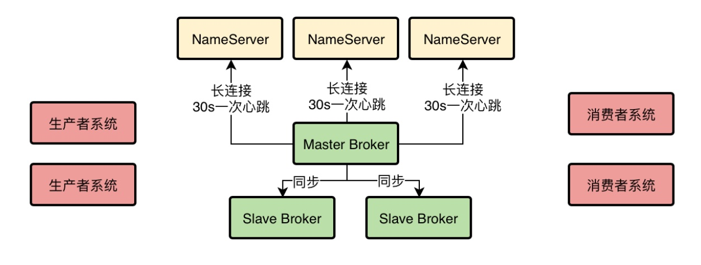
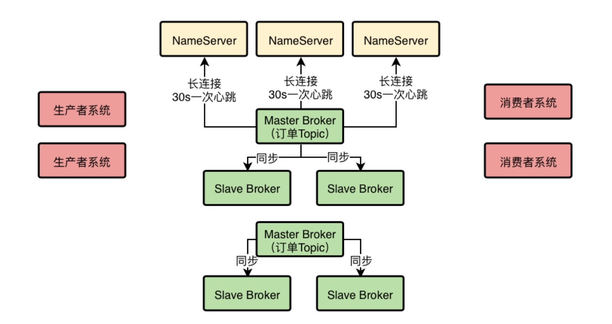
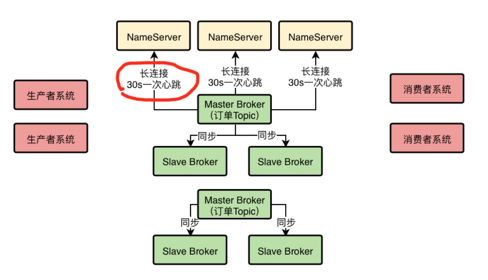
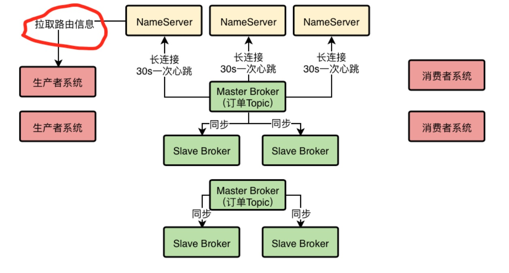
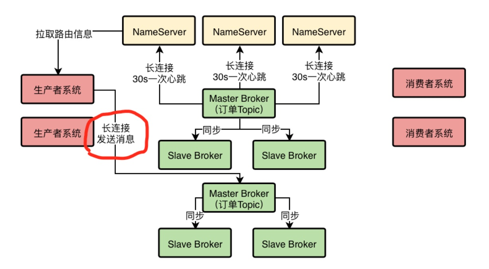
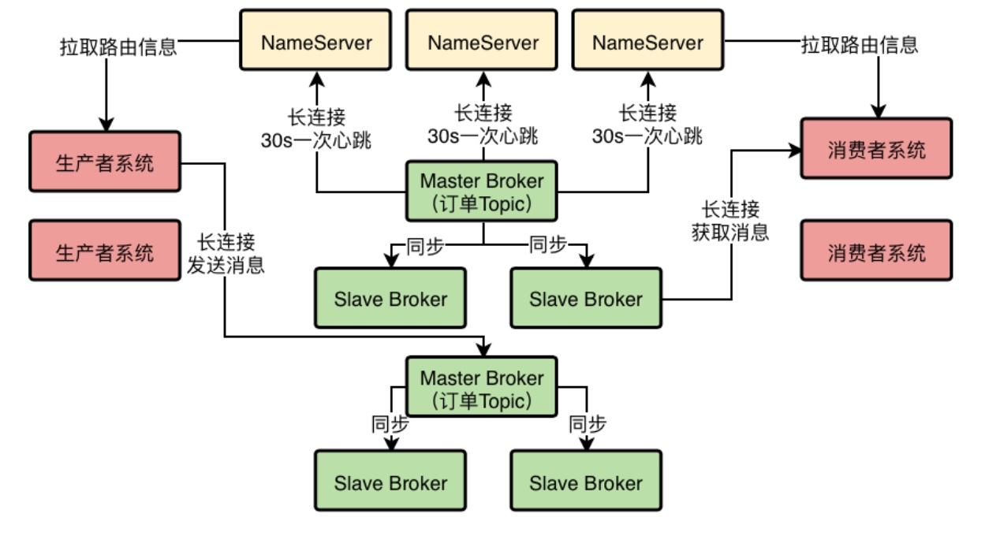

1、MQ生产部署架构的设计任务
经过上一次的技术分享，小猛基本上把RocketMQ的核心工作原理都搞明白了，接着下一步明哥给他的任务就是基于RocketMQ的核心原理，去设计一套RocketMQ的生产部署架构出来。
在这套生产部署架构中，需要着重考虑到高可用的问题，要保证整个系统运行过程中任何一个环节宕机都不能影响系统的整体运行。
小猛在接受了这个任务之后，就开始埋头设计起了MQ的生产部署架构，几天之后就搞定了这套架构设计，然后他找明哥单独到一个小会议室里，开始给明哥讲他构思的这套MQ的生产部署架构。
2、NameServer集群化部署，保证高可用性
首先第一步，我们要让NameServer集群化部署，我建议可以部署在三台机器上，这样可以充分保证NameServer作为路由中心的可用性，哪怕是挂掉两台机器，只要有一个NameServer还在运行，就能保证MQ系统的稳定性。
小猛说着，打开了架构方案里的第一张图。

因为我上次分享的时候也说了，NameServer的设计是采用的Peer-to-Peer的模式来做的，也就是可以集群化部署，但是里面任何一台机器都是独立运行的，跟其他的机器没有任何通信。
每台NameServer实际上都会有完整的集群路由信息，包括所有的Broker节点信息，我们的数据信息，等等。所以只要任何一台NameServer存活下来，就可以保证MQ系统正常运行，不会出现故障。
因此NameServer的集群化部署是必须的第一步。
3、基于Dledger的Broker主从架构部署
其次，就是要考虑我们的Broker集群应该如何部署，采用什么方式来部署。
经过上次的分享我们已经知道，如果采用RocketMQ 4.5以前的那种普通的Master-Slave架构来部署，能在一定程度上保证数据不丢失，也能保证一定的可用性。
但是那种方式的缺陷是很明显的，最大的问题就是当Master Broker挂了之后，没办法让Slave Broker自动切换为新的Master Broker，需要手工做一些运维操作，修改配置以及重启机器才行，这个非常麻烦。
在手工运维的期间，可能就会导致系统的不可用。
所以既然现在RocketMQ 4.5之后已经基于Dledger技术实现了可以自动让Slave切换为Master的功能，那么我们肯定是选择基于Dledger的主备自动切换的功能来进行生产架构的部署。
而且Dledger技术是要求至少得是一个Master带两个Slave，这样有三个Broke组成一个Group，也就是作为一个分组来运行。一旦Master宕机，他就可以从剩余的两个Slave中选举出来一个新的Master对外提供服务。
此时小猛又打开了一个图。

每个Broker（不论是Master和Slave）都会把自己注册到所有的NameServer上去。
注：图中没有画出Slave Broker注册到NameServer。
然后Master Broker还会把数据同步给两个Slave Broker，保证一份数据在不同机器上有多份副本。
4、Broker是如何跟NameServer进行通信的？
小猛说到这里停顿了一下，想了想然后继续说到，之前我们分享的时候就说过，这个Broker会每隔30秒发送心跳到所有的NameServer上去，然后每个NameServer都会每隔10s检查一次有没有哪个Broker超过120s没发送心跳的，如果有，就认为那个Broker已经宕机了，从路由信息里要摘除这个Broker。
但是当时没有讲Broker和NameServer进行通信的细节，这里在我们的生产架构方案里补充进去一些细节。
首先，Broker跟NameServer之间的通信是基于什么协议来进行的？
HTTP协议？RPC调用？还是TCP长连接？首先我们要搞明白这个。
在RocketMQ的实现中，采用的是TCP长连接进行通信。
也就是说，Broker会跟每个NameServer都建立一个TCP长连接，然后定时通过TCP长连接发送心跳请求过去
小猛说着打开下一张图，在这个图里完善了一些Broker跟NameServer通信的细节。

所以各个NameServer就是通过跟Broker建立好的长连接不断收到心跳包，然后定时检查Broker有没有120s都没发送心跳包，来判定集群里各个Broker到底挂掉了没有。
5、使用MQ的系统都要多机器集群部署
下一步，我们一定会有很多的系统使用RocketMQ，有些系统是作为生产者往MQ发送消息，有些系统是作为消费者从MQ获取消息，当然还有的系统是既作为生产者，又作为消费者，所以我们要考虑这些系统的部署。
对于这些系统的部署本身不应该在MQ的考虑范围内，但是我们还是应该给出一个建议，就是无论作为生产者还是消费者的系统，都应该多机器集群化部署，保证他自己本身作为生产者或者消费者的高可用性。
因为一个系统如果就部署在一台机器上，然后作为生产者向MQ发送消息，那么一旦哪天机器上的生产者系统挂了，整个流程就断开了，不能保证高可用性。
但是如果在多台机器上部署生产者系统，任何一台机器上的生产者挂了，其他机器上的生产者系统可以继续运行。
小猛此时打开了下一张图，里面有生产者系统和消费者系统集群化部署的示意。

上述所说在图里可以清晰看到，同理消费者系统也是集群化部署的，如果一台机器上的消费者系统挂了，其他机器上的消费者系统应该是可以继续运行的。
6、MQ的核心数据模型：Topic到底是什么？
下一步，生产者和消费者都会往MQ里写入消息和获取消息了，但是有一个问题：
MQ中的数据模型是什么？你投递出去的消息在逻辑上到底是放到哪里去的？是队列吗？还是别的什么呢？
小猛在这里补充了一个很关键的概念，这个就是MQ中的核心数据模型，Topic。
这个Topic如果直接翻译为中文，大概就是主题的意思，但是你要是听到主题两个字瞬间会觉得很蒙圈，因为感觉上主题似乎是手机上选择的各种壁纸主题这种概念，比如换一个壁纸主题，手机背景就变了。
所以对Topic还是不能直译，其实他表达的意思就是一个数据集合的意思。
举个例子，现在你的订单系统需要往MQ里发送订单消息，那么此时你就应该建一个Topic，他的名字可以叫做：topic_order_info，也就是一个包含了订单信息的数据集合。
然后你的订单系统投递的订单消息都是进入到这个“topic_order_info”里面去的，如果你的仓储系统要获取订单消息，那么他可以指定从“topic_order_info”这里面去获取消息，获取出来的都是他想要的订单消息了。
一句话：Topic其实就是一个数据集合的意思，不同类型的数据你得放不同的Topic里去。
要是你有一些商品数据要发送消息到MQ里，你就应该创建一个Topic叫做“topic_product_info”，代表里面都是商品数据，那些想要从MQ里获取商品数据的系统就可以从“topic_product_info”里获取了。
所以简单来说，你的系统如果要往MQ里写入消息或者获取消息，首先得创建一些Topic，作为数据集合存放不同类型的消息，比如说订单Topic，商品Topic，等等。
7、Topic作为一个数据集合是怎么在Broker集群里存储的？
下一个问题：我们创建的那些Topic是怎么存储在Broker集群里的呢？
这里就体现出来一个分布式存储的概念了。
首先我们来想一下，比如我们有一个订单Topic，可能订单系统每天都会往里面投递几百万条数据，然后这些数据在MQ集群上还得保留好多天，那么最终可能会有几千万的数据量，这还只是一个Topic。
那么如果有很多的Topic，并且里面都有大量的数据，最终加起来的总和也许是一个惊人的数字，此时这么大量的数据本身是不太可能存放在一台机器上的。
如果一台机器没法放下那么多的数据，应该怎么办呢？
很简单，分布式存储。
我们可以在创建Topic的时候指定让他里面的数据分散存储在多台Broker机器上，比如一个Topic里有1000万条数据，此时有2台Broker，那么就可以让每台Broker上都放500万条数据。
这样就可以把一个Topic代表的数据集合分布式存储在多台机器上了。
小猛说着，打开了一个图，在这个图里，新画出来了一个Master Broker和两个Slave Broker，因为Dledger技术要求每个Master都得带两个Slave来进行选举。然后示意出来了一个订单Topic的数据分布式存储在两个Master Broker上了。

而且另外很重要的一件事是，每个Broke在进行定时的心跳汇报给NameServer的时候，都会告诉NameServer自己当前的数据情况，比如有哪些Topic的哪些数据在自己这里，这些信息都是属于路由信息的一部分。
小猛说着在上面的图里画了一个红圈，示意了Broker心跳的时候会汇报给NameServer自己的数据情况，这样每个NameServer都知道集群里有哪些Broker，每个Broker存放了哪些Topic的数据。

8、生产者系统是如何将消息发送给Broker的？
接着是下一个问题：生产者系统是如何将消息发送到Broker的呢？
首先我们之前说过，在发送消息之前，得先有一个Topic，然后在发送消息的时候你得指定你要发送到哪个Topic里面去。
接着既然你知道你要发送的Topic，那么就可以跟NameServer建立一个TCP长连接，然后定时从他那里拉取到最新的路由信息，包括集群里有哪些Broker，集群里有哪些Topic，每个Topic都存储在哪些Broker上。
小猛说着打开了一张示意图，在里面用红圈示意了拉取路由信息。

然后生产者系统自然就可以通过路由信息找到自己要投递消息的Topic分布在哪几台Broker上，此时可以根据负载均衡算法，从里面选择一台Broke机器出来，比如round robine轮询算法，或者是hash算法，都可以。
这个具体的选择Broker的算法，后面我们在讲RocketMQ技术落地到项目的时候再来细说就可以。
总之，选择一台Broker之后，就可以跟那个Broker也建立一个TCP长连接，然后通过长连接向Broker发送消息即可.
Broker收到消息之后就会存储在自己本地磁盘里去。小猛说着又打开了一个图，在图里用红圈圈出了发送消息的地方。

这里唯一要注意的一点，就是生产者一定是投递消息到Master Broker的，然后Master Broker会同步数据给他的Slave Brokers，实现一份数据多份副本，保证Master故障的时候数据不丢失，而且可以自动把Slave切换为Master提供服务。
9、消费者是如何从Broker上拉取消息的？
消费者系统其实跟生产者系统原理是类似的，他们也会跟NameServer建立长连接，然后拉取路由信息，接着找到自己要获取消息的Topic在哪几台Broker上，就可以跟Broker建立长连接，从里面拉取消息了。
小猛说着打开了最后一张图，也就是最终的MQ生产部署架构图。

这里唯一要注意的一点是，消费者系统可能会从Master Broker拉取消息，也可能从Slave Broker拉取消息，都有可能，一切都看具体情况。
10、整体架构：高可用、高并发、海量消息、可伸缩
小猛指着最终的架构图说，整个这套生产架构是实现完全高可用的，因为NameServer随便一台机器挂了都不怕，他是集群化部署的，每台机器都有完整的路由信息；
Broker随便挂了一台机器也不怕，挂了Slave对集群没太大影响，挂了Master也会基于Dledger技术实现自动Slave切换为Master；
生产者系统和消费者系统随便挂了一台都不怕，因为他们都是集群化部署的，其他机器会接管工作。
而且这个架构可以抗下高并发，因为假设订单系统对订单Topic要发起每秒10万QPS的写入，那么只要订单Topic分散在比如5台Broker上，实际上每个Broker会承载2万QPS写入，也就是说高并发场景下的10万QPS可以分散到多台Broker上抗下来。
然后集群足以存储海量消息，因为所有数据都是分布式存储的，每个Topic的数据都是存储在多台Broker机器上的，用集群里多台Master Broker就足以存储海量的消息。
所以，用多个Master Broker部署的方式，加上Topic分散在多台Broker上的机制，可以抗下高并发访问以及海量消息的分布式存储。
然后每个Master Broker有两个Slave Broker结合Dledger技术可以实现故障时的自动Slave-Master切换，实现高可用性。
最后，这套架构还具备伸缩性，就是说如果要抗更高的并发，存储跟多的数据，完全可以在集群里加入更多的Broker机器，这样就可以线性扩展集群了。
明哥听完这套生产部署架构的设计，对小猛真是由衷的赞赏，感觉这个小伙子虽然才刚毕业，但是考虑问题真的很周全，很多细节都考虑到了，而且除了细节还能进行整体架构的考虑，真的很不错。
明哥说：小伙子太棒了，我相信你只要有这个劲头，后续一定可以帮助咱们团队用MQ技术改造好系统架构的。